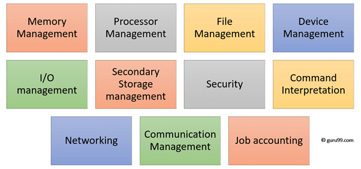

Functions of OS
An operating system has three main functions:
- manage the computer's resources, such as the central processing unit, memory, disk drives, and printers
- establish a user interface
- execute and provide services for applications software
